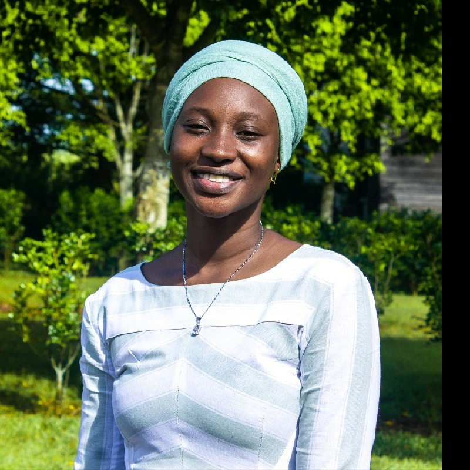

Ameerat Ademuyiwa

Summary
As a passionate and dedicated student with a strong interest in coding, networking and data analysis, I possess a solid foundation in programming languages Being a detail-oriented individual with strong problem-solving and analytical skills, I enjoy working in a collaborative environment to solve complex problems. I am enthusiastic about continuing to learn and develop my skills in data analytics and coding while applying my skillsets to make a meaningful impact.
Work Experience
-
Messaging and Activation Strategy Extern
Paragon One & Greenpeace USA | Remote, United States of America
July 2023 - September 2023
- Designed and executed primary research initiatives, engaging with Gen Z individuals to assess their sentiments and perceptions about the climate crisis and activism.
- Compiled and presented data-driven reports, summarizing research findings and offering actionable insights.
- Provided strategic recommendations and next steps to enhance Greenpeace's volunteer outreach and activation strategies.
- Contributed to Greenpeace's mission by actively participating in efforts to engage and activate Gen Z in climate campaigns.
-
Business Intelligence Intern
Mauritius Commercial Bank Consulting | Mauritius
May 2022 - September 2022
- Worked with a team of data analysts to collect and analyse data from various sources.
- Designed and developed data models and ETL processes to transform and load data into a data warehouse.
- Collaborated with business stakeholders to understand their data needs and requirements.
- Conducted data analysis to identify trends and insights that could help the business make data-driven decisions.
-
Data Attendance Clerk
African Leadership University | Mauritius
September 2021 - April 2022
- Maintain data accuracy and completeness while entering and formatting data into Microsoft Excel spreadsheets accurately and in a timely manner.
- Regulate accurate attendance records for students and ensuring compliance with attendance-related regulations and policies.
- Analysing large volumes of data to provide reports and analytical dashboards that drive decision making.
Education History
-
BSc (Hons) Computing
Glasgow Caledonian University | Pamplemousses, Mauritius
January 2021 - Current
- Leadership Core
- Web Development: HTML, CSS, and JavaScript programming.
- Programming Languages : Java, JavaScript
- Data Structures and Algorithms
- Database Management : SQL programming and database optimization.
- IT Project Management
-
Business Intelligence & Data Analyst (BIDA) Certification
Corporate Financial Institute | Remote
April 2023 - July 2023
- Data Analysis: Analysing complex datasets to extract valuable insights and support decision-making.
- Data Visualization: Skilled in creating compelling data visualizations and dashboards to effectively communicate findings.
- SQL Querying: Competent in writing SQL queries to retrieve, manipulate, and analyze data from databases.
- Business Intelligence Tools: Gained experience with tools such as Tableau & Power BI
-
Financial Modelling & Valuation Analyst Certification
ALX Financial Analyst & CFI | Remote
September 2022 - December 2022
- Financial Modelling: Financial models in Excel, including forecasting financial statements, analysing financial data, and creating financial projections.
- Valuation Techniques: Discounted cash flow analysis, relative valuation, and precedent transaction analysis.
- Financial Statement: Analyse financial statements to evaluate a company's financial performance.
Extracurricular Activities
-
Circular Economy Champion | Project Lead, Ventic Plastic Venture
Ellen MacArthur Foundation | United Kingdom
January 2021- Present
- Ventic dedication is to create a more sustainable Africa by tackling the rising problem of plastic trash in the environment and regions prone to conservation deficiencies.
- Plastic fences, construction materials, and stationery boxes are among the products produced by Ventic which reduces the amount of plastic waste that ends up in landfills and oceans.
-
Nissa An Nour | Vonlunteer
August 2018 - Present
- Enabling 5000+ unprivileged people in my community to have some necessary items to survive including food supplies, clothing and financial assistance. And allowing 50+ children to have academic tools in order to pursue their education.
-
StartupHack hackathon Data award
Paragon One & Greenpeace USA | Remote, United States of America
July 2023 - September 2023
- I was part of a team of 2 that won the Data award from the Startup Hack Hackathon through our final software solution, Anonimy. My team and I made use of the Bubble Software to provide our solution promoting authentic communication. The Hackathon was organized by the London Business School, African Leadership University, Mate dating app, Upskiller and Hence.
Relevant Skills
- Data Analysis
- SQL
- Python
- Tableau
- Power BI
- Microsoft Excel
- Analytical Thinking
- Research Skills
- Communication
- Problem-Solving
- Time Management
- Attention to details
Languages
- French - Native Language
- English - Fluent